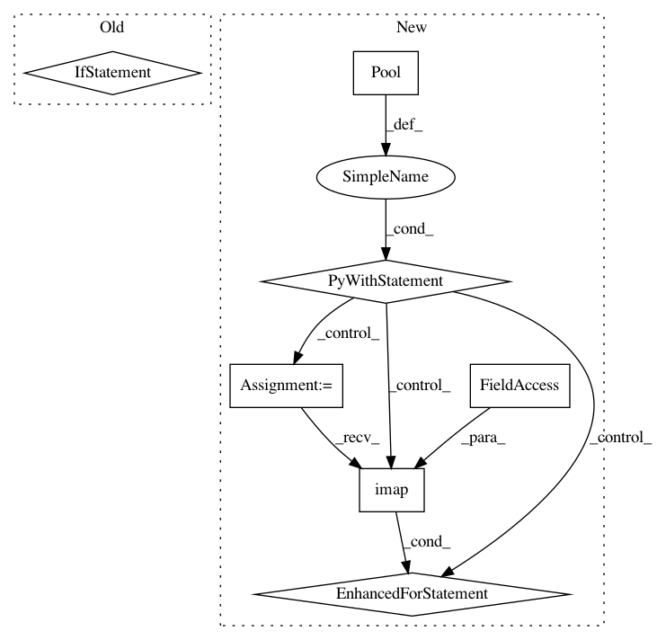

cef99445ab551931fed507518b85034b97c946ee,src/search_suspect_places.py,,search_suspicious_around_companies,#Any#,130
Before Change
future_to_search_suspicious[future] = company
for future in futures.as_completed(future_to_search_suspects):
company = future_to_search_suspicious[future]
if future.exception() is not None:
warn("{} raised an exception: {}".format(company["cnpj"],
future.exception()))
elif future.result() is not None:
write_suspicious_info(future.result(), company["cnpj"])
def search_suspicious_around_company(company):
:param company: panda series.
:return: suspect
After Change
rows = companies.to_dict("records")
total = len(rows)
count = 0
with Pool(processes=4) as pool:
for company in pool.imap(search_suspicious_around_company, rows):
count += 1
print_status(total, count)
if company:
write_csv(company)
def search_suspicious_around_company(company):
:param company: (dict)
:return: suspect
In pattern: SUPERPATTERN
Frequency: 3
Non-data size: 7
Instances
Project Name: okfn-brasil/serenata-de-amor
Commit Name: cef99445ab551931fed507518b85034b97c946ee
Time: 2016-11-09
Author: cuducos@gmail.com
File Name: src/search_suspect_places.py
Class Name:
Method Name: search_suspicious_around_companies
Project Name: okfn-brasil/serenata-de-amor
Commit Name: e4d5b98f9d2ef79279300d1074cbaacde8e816dc
Time: 2016-11-20
Author: cuducos@gmail.com
File Name: src/fetch_sex_places.py
Class Name:
Method Name: sex_places_neraby
Project Name: okfn-brasil/serenata-de-amor
Commit Name: b454cebbbe5abd2066ed231c34704ed4f85d4160
Time: 2016-09-22
Author: cuducos@gmail.com
File Name: jarbas/core/management/commands/receipturls.py
Class Name: Command
Method Name: handle